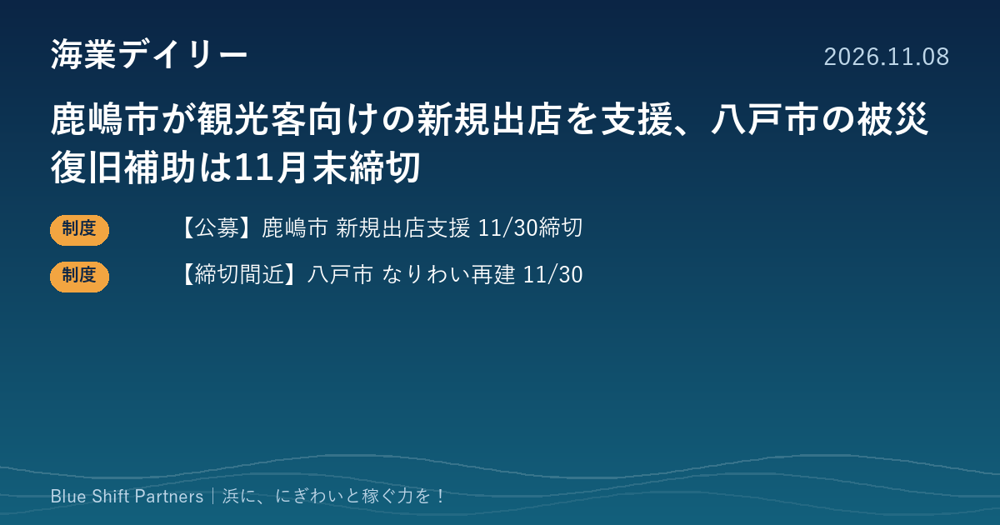

2026.11.08
鹿嶋市が観光客向けの新規出店を支援、八戸市の被災復旧補助は11月末締切

本日は締切が11月30日に迫る補助制度を2件お届けします。茨城県鹿嶋市の観光客向け新規出店の支援と、青森県八戸市で漁業者・漁協も対象になった被災資産の復旧補助です。
【公募】鹿嶋市チャレンジショップ支援事業補助金（11月30日締切）
茨城県鹿嶋市は、市が定める対象区域内で観光客の集客が見込める営利目的の事業を新たに始める個人・法人を対象に、令和8年度チャレンジショップ支援事業補助金の申請を11月30日（月）まで受け付けています。店舗の改修費または建築費（内装・外装・給排水・サイン・電気・撤去工事など）は2分の1・上限300万円、事業計画づくりや資金調達、販路開拓などのコンサルタント委託料などの経営支援費は10分の10・上限200万円です。申請書類は鹿嶋市役所第2庁舎2階の商工観光課の窓口へ提出し、12月に書類審査、12月中旬に交付決定の予定です。申請件数や内容によっては満額で交付決定とならない場合があるとされています。
ここがポイント：海に面した観光地で、地魚を出す食堂や海産物の店、体験の受付拠点を新たに開く計画があれば、改装費と開業準備の専門家費用の両方に使えます。対象区域は市の資料で確かめ、事前に商工観光課へ相談しておくと安心です。
出典：鹿嶋市「令和8年度鹿嶋市チャレンジショップ支援事業補助金」（2026-10-26）
【締切間近】八戸市 なりわい再建補助金（農林水産業・第3次）11月30日まで
青森県八戸市は、令和7年青森県東方沖地震、令和8年三陸沖地震、令和8年岩手県沖地震で被災した資産を復旧して事業を再開する中小企業者のための補助金で、第3次の募集から農林水産業に対象を広げ、11月30日まで申請を受け付けています。市内で農林水産業を営む中小企業者（会社・個人）のほか、漁業協同組合なども対象で、事業継続計画の作成など募集要領の要件をすべて満たす必要があります。補助率は対象経費の3分の2以内、上限は1事業者あたり1,000万円、下限は10万円で、先着順ではありません。申請は郵送かメールが推奨され、漁業関係の問い合わせ先は八戸市水産事務所です。
ここがポイント：地震で傷んだ作業場や冷蔵設備、漁具の保管施設などの復旧費の3分の2まで補助を受けられる可能性があります。締切まで3週間あまりのため、該当する漁業者・漁協は募集要領を読んだうえで、早めに市へ電話で相談するのが確実です。
出典：八戸市「中小企業なりわい再建被災資産復旧事業補助金（農林水産業）」（2026-10-27）
補助金は「あるか」より「間に合うか」で使えるかどうかが決まります。11月末締切の制度が重なっているので、浜の事業者や漁協と話す機会があれば、該当しそうな計画がないかひと声かけてみる価値があります。